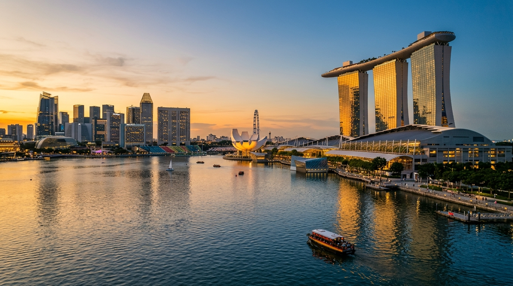
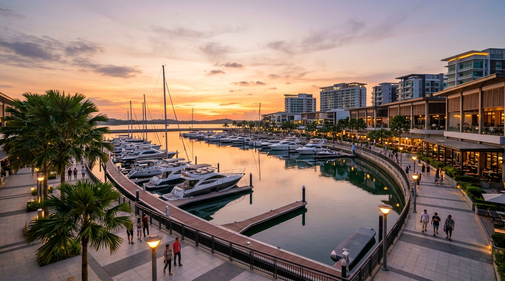
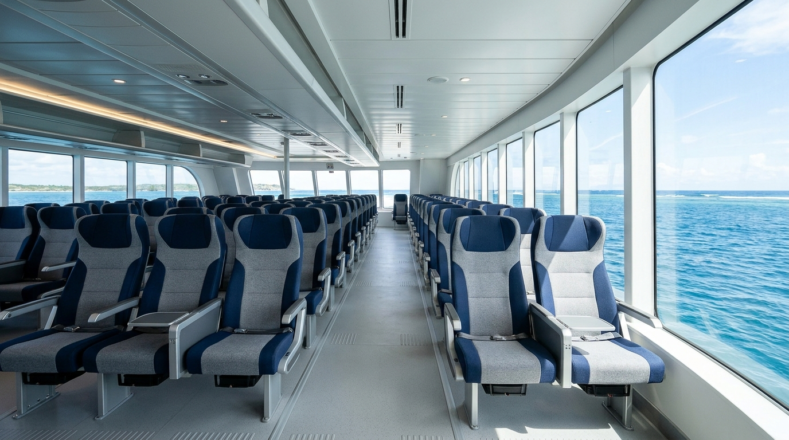
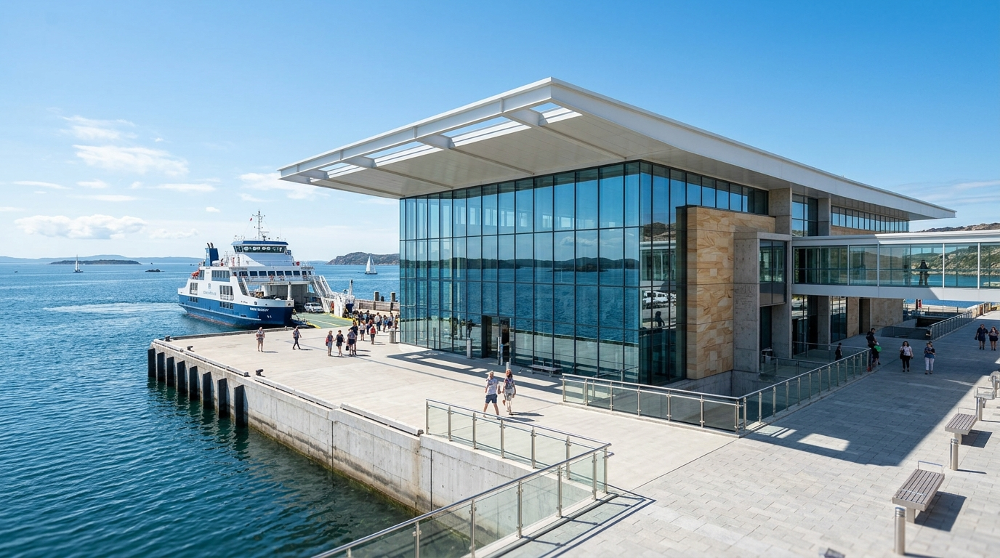

HarbourFront & Tanah Merah
Singapura
Pelayaran cepat 45–50 menit dari Batam Centre dan Nongsapura langsung menuju pusat kota dan Sentosa.
Cari Tiket ke SingapuraPesan tiket kapal feri internasional dari Batam menuju Singapura dan Malaysia dengan jadwal terkurasi, informasi terminal yang jelas, dan boarding pass digital instan.
Pilih rute dua arah antara Batam, Singapura, dan Johor Malaysia dengan terminal keberangkatan yang terintegrasi.
Kuota kursi dan tarif per orang untuk satu kali pelayaran. Klik pilih untuk melanjutkan pemesanan.
Akses pelabuhan strategis untuk perjalanan bisnis, liburan akhir pekan, maupun kunjungan keluarga.

Pelayaran cepat 45–50 menit dari Batam Centre dan Nongsapura langsung menuju pusat kota dan Sentosa.
Cari Tiket ke Singapura
Akses langsung ke Iskandar Puteri dan Johor Bahru dari Harbour Bay serta Batam Centre dalam 90–105 menit.
Cari Tiket ke MalaysiaHub pelabuhan internasional utama di Kepulauan Riau dengan koneksi pulang-pergi harian dari Singapura dan Malaysia.
Cari Tiket ke BatamDirancang khusus untuk penumpang lintas negara agar setiap tahap — mulai dari cek kuota, pengisian paspor, hingga verifikasi pembayaran — berjalan jelas dan transparan.


Tentukan asal, tujuan, tanggal keberangkatan, dan jumlah penumpang, lalu pilih kapal yang sesuai.
Isi data penumpang sesuai paspor aktif yang berlaku minimal 6 bulan sebelum tanggal keberangkatan.
Selesaikan pembayaran simulasi (QRIS/VA/Transfer) dan akses boarding pass digital Anda di menu My Booking.